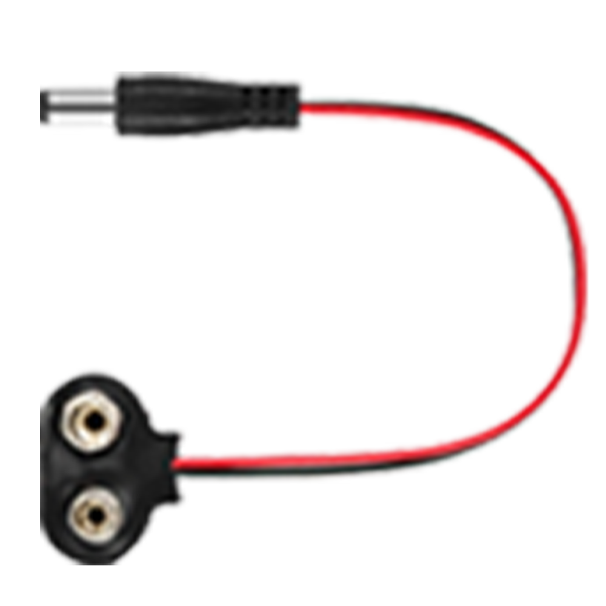

9V battery snap to DC adapter

Descriptions
A 9V battery snap to DC adapter is a device that serves the purpose of converting the power supply from a standard 9V battery to a direct current (DC) power source that can be used in various electronic devices and circuits. Here's a breakdown of its functions and uses:
-
Conversion of Power Source: The primary role of this adapter is to transform the power from a 9V battery, which is typically used in small electronic devices like smoke detectors or carbon monoxide detectors, into a form that can be utilized by other electronic equipment.
-
Safety and Convenience: By using a 9V battery snap to DC adapter, you can easily replace the power source in devices that originally require a battery. This can be safer and more convenient, especially in situations where continuous power is needed and changing batteries frequently is impractical.
-
Versatility: These adapters are versatile and can be used in a wide range of applications. They can power small motors, LED lights, or any other device that requires a stable DC power supply.
-
Connection Stability: The snap mechanism ensures a secure and stable connection between the battery and the device, preventing accidental disconnections that could interrupt the power supply.
-
Portability: Devices equipped with these adapters can be easily transported and used in various settings, making them ideal for field work, hobby projects, or temporary installations.
-
Cost-Effectiveness: In some cases, using a 9V battery snap to DC adapter can be more cost-effective than continuously purchasing and replacing batteries, especially for devices that consume a lot of power.
In summary, a 9V battery snap to DC adapter is a handy tool for anyone needing a reliable and easily accessible power source for their electronic devices, offering safety, convenience, and flexibility in power supply management.